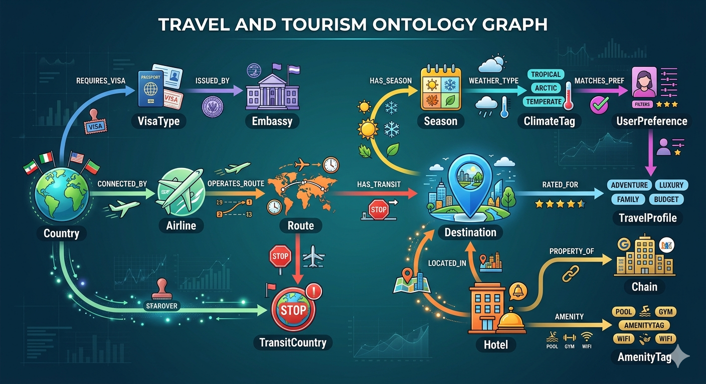
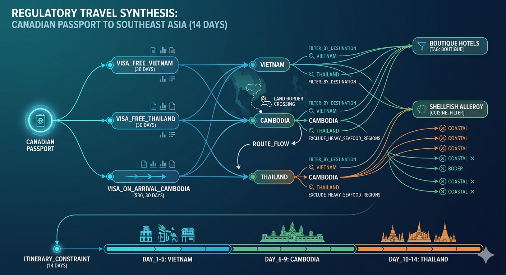

This is Part 2 of the RAG Enterprise Series. It assumes familiarity with the four RAG levels (L1–L4). If you haven't read that yet, start with Part 1.
2. Domain 1 — Travel and Tourism Software Systems
2.1 Domain Characteristics and Challenges
Travel is a multi-source, heterogeneous, temporally sensitive domain. A travel AI system must reason across:
- GDS data (Global Distribution Systems — Amadeus, Sabre, Travelport) for flights, hotels, rail
- Regulatory/visa databases — constantly updated, jurisdiction-dependent
- Unstructured content — reviews, destination guides, travel blog content
- Real-time pricing — dynamic, revenue-managed, perishable inventory
- User context — nationality, passport, dietary restrictions, accessibility needs, loyalty tier
- Multilingual + multicultural — the same destination means different things to a Japanese backpacker vs. a German retiree vs. a Canadian family
Core challenges:
| Challenge | Why It's Hard |
|---|---|
| Intent ambiguity | "Something warm and relaxing under $2000" is not a query, it's a semantic space |
| Multi-constraint satisfaction | "Connects through Dubai, under 14 hours, window seat, vegetarian meal, wife's birthday" |
| Visa-route dependency | Visa rules depend on the path, not just the destination (transit visas, layover rules) |
| Real-time requirement | Pricing retrieved at T+5 seconds may be expired |
| Cultural nuance in embeddings | "Luxury" in Japanese context ≠ "luxury" in Brazilian context |
| Multilingual corpus | Destination content exists in 50+ languages with varying quality |
2.2 Level 1 — Vanilla RAG
Use case: Airline FAQ chatbot — "What is your carry-on bag policy for economy class?" or "What are the entry requirements for Thailand?"
Implementation:
User query → embedding → cosine similarity over policy corpus → top-3 docs → GPT-4 prompt → response
Real-world example: Air Canada's virtual agent handling basic policy questions. British Airways' Ask Ben chatbot (pre-2023).
What it handles well:
- Static policy lookups (baggage, cancellation, check-in timings)
- Destination overview content ("What is Kyoto known for?")
- Basic FAQ deflection — reduces tier-1 call volume by 30–40%
Where it breaks:
- "Is my Canadian passport valid for a transit through Dubai if I'm connecting to India on a separate ticket?" — requires policy AND route AND nationality AND ticket type — no single chunk answers this
- Semantic drift: "Budget-friendly beach" retrieves "beach resort pricing" documents rather than genuinely affordable destinations
- No recency awareness — a retrieved doc about Thailand visa requirements from 6 months ago may be outdated
2.3 Level 2 — Hybrid RAG
Use case: Destination and itinerary search combining semantic intent with precise identifier matching.
Implementation:
User query → [Dense encoder (semantic intent)] + [BM25 (exact keywords)]
→ Reciprocal Rank Fusion (RRF) or learned fusion
→ Cross-encoder reranker
→ Top-k → LLM prompt
Why dense-only fails here: A user querying "flights from YYZ to NRT" uses IATA codes. A pure semantic model may match "Toronto to Tokyo flights" correctly, but it might also retrieve "New York to Tokyo" because semantically they're close. BM25 enforces the exact YYZ constraint.
Real-world example: Expedia's search engine uses hybrid retrieval — Elasticsearch (BM25-based) for structured filters + neural retrieval for semantic destination discovery. Booking.com's "What kind of trip are you looking for?" feature.
What it solves vs L1:
- Exact identifier matching: airport codes, hotel chains, cruise lines, tour operators
- Keyword anchoring: "direct flights only" must hard-match, not semantically approximate
- Precision on brand names: "Fairmont" must retrieve Fairmont properties, not "luxury hotels"
Emerging pattern — Reciprocal Rank Fusion (RRF):
# Merge dense + sparse rankings
final_score[doc] = Σ 1 / (k + rank_dense[doc]) + 1 / (k + rank_sparse[doc])
# k=60 is standard; lower k = more aggressive rank-weighting
What L2 still cannot do: It cannot synthesize across documents. "Plan me a 10-day Japan itinerary for a first-time visitor who loves architecture, speaks no Japanese, and is vegetarian" requires pulling from multiple destination docs, restaurant guides, accommodation types, transportation options — and synthesizing them into a coherent plan. That requires L3 or L4.
2.4 Level 3 — GraphRAG
Use case: Complex itinerary planning with multi-dimensional constraint satisfaction, or visa eligibility reasoning.
The ontology investment:

Real-world example: Rome2Rio's multi-modal routing system is graph-based (not LLM-backed, but the ontology structure is instructive). Skyscanner's "Everywhere" feature uses destination graph traversal. Mondee's AI travel agent (2024) combines knowledge graph + LLM.
Query example:
"I hold a Canadian passport. I want to visit Vietnam, Cambodia, and Thailand in 14 days. I prefer boutique hotels and I'm allergic to shellfish."
Graph traversal path:

What L3 enables that L2 cannot: Multi-hop relationship traversal. No single retrieved document says "Canadian passport holders traveling the Vietnam-Cambodia-Thailand circuit don't need advance visas." That fact is constructed from the intersection of three visa rules, route feasibility data, and border crossing availability in the graph.
Implementation consideration: Graph databases (Neo4j, Amazon Neptune, TigerGraph) + vector index (FAISS, Weaviate) hybrid query. Microsoft's GraphRAG (2024) open-source framework uses community detection on knowledge graphs for global synthesis.
2.5 Level 4 — Agentic RAG
Use case: "Plan my honeymoon to Japan during cherry blossom season — we love quiet, culturally significant architecture, we're vegetarian, and we've never been to Asia before."
Agent loop:
Turn 1: Query "cherry blossom forecast Japan 2025" → peak window: late March to mid-April, Kyoto 1st week April
Turn 2: Query "vegetarian-friendly regions Japan" → Kyoto, Nara higher density than Tokyo
Turn 3: Query "quiet traditional architecture sites Kyoto not Fushimi Inari" → Philosopher's Path, Daitoku-ji, Fushimi area alternatives
Turn 4: Reflect: Do I have accommodation options? No → Query "ryokan Kyoto vegetarian kaiseki" → 3 results
Turn 5: Query "Nara day trip from Kyoto" → feasible, 45 min shinkansen
Turn 6: Query "flight YYZ → KIX (Osaka) April cherry blossom" → 2 connecting options
Turn 7: Synthesize: 10-day itinerary with day-by-day allocation, booking recommendations, transport passes
Real-world systems: Priceline's Penny AI (2024), Kayak's AI trip planner, Expedia's AI agent — all use variations of multi-hop agentic retrieval. None are truly L4 yet; most are L2.5 with scripted multi-turn flows. Genuine L4 in travel is 2025–2027 horizon.
What makes travel agentic RAG uniquely hard:
- Inventory expiry: A retrieved flight offer may expire between retrieval steps
- Scope explosion: Every constraint added by the agent's reflection increases the retrieval fanout
- No single ground truth: Two travel agents would give different itineraries — the LLM's synthesis is inherently subjective
2.6 Supporting Elements — Travel Domain
Memory:
Episodic memory:
- Past trip history (destinations visited, hotels stayed, airlines used)
- Feedback and ratings from previous trips
- Cancellations and complaint patterns
Semantic memory:
- User profile: passport nationality, dietary restrictions, loyalty programs
- Preference vector: adventure vs. relaxation, budget tier, accommodation type
- Family context: traveling with children, accessibility needs
In-context memory:
- Entire multi-turn booking session retained in window
- Real-time pricing snapshots timestamped for expiry
Prompt Engineering:
System prompt pattern:
"You are a senior travel consultant with 20 years of experience.
User profile: [INJECT_PROFILE].
Regulatory context: [INJECT_ACTIVE_VISA_RULES for {user.nationality}].
Inventory snapshot timestamp: [INJECT_TIMESTAMP].
Always flag when retrieved information may be outdated (>72h).
Never confirm availability — suggest verification with booking engine."
Chain-of-thought for constraint satisfaction:
Step 1: Extract all hard constraints (dates, budget, nationality).
Step 2: Extract all soft constraints (preferences, style).
Step 3: Identify which constraints require live lookup vs. static knowledge.
Step 4: Synthesize options ranked by constraint satisfaction coverage.
Fine-Tuning:
- Use case: Train a base model on travel booking conversation logs to learn domain vocabulary (GDS codes, layover rules, fare class logic)
- Dataset: Anonymized booking flows + customer service transcripts
- Goal: The model should understand "Y-class fare" without retrieval augmentation, recognize fare rules, and know that "0PC" on a fare means zero piece checked baggage
- Tool: Unsloth + QLoRA for efficient fine-tuning on a 7B base model; deploy as a specialized travel planning assistant
Embedding improvements:
- Cross-lingual embeddings (LaBSE, mE5): A user querying in French "hôtels romantiques à Paris" should match English-language hotel descriptions without requiring translation
- Cultural context embeddings: "Luxury" has culturally embedded meaning — training embeddings on culture-tagged corpora improves semantic alignment across markets
- Temporal embeddings: Encode recency signal into the embedding — a 2022 visa document should rank lower than a 2024 one for the same query
Part of the RAG Enterprise Series. Next: RAG in Hospital Management — Zero Hallucination Tolerance.